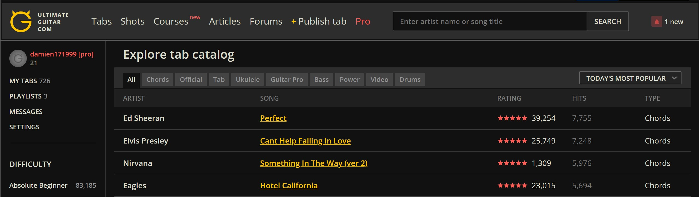

Things You Need
Capo
If you only know how to play the chords in a single key, you can play songs in other keys using a capo
Pick (Optional)
If you do not have long fingernails/you do not want damaged fingernails
Chords
Key of G
If you are first learning how to play the guitar, and you want to learn how to play pop songs, the best way to start is to learn songs in the key of G. Four basic chords should be enough for you to play most songs. Below is a youtube video to learn how to play the four chords.
Resources
Ultimate Guitar
1. Click on a song you would like to learn. For this example, I will use the song "Perfect" by Ed Sheeran

2. Note that for the song perfect, the tabs are already in the key of G ( since the four chords are G, Em, C, and D).
Also note that the capo is to be placed on the first fret.
3. If need be, you can use the transpose button (-) to transpose the chords until you reach the key of G. To identify if it is in the key of G, just check that there are the chords (G, C, D, Em) Beside the transpose button there will be a number (e.g. -4) That will be the fret you place your capo on!